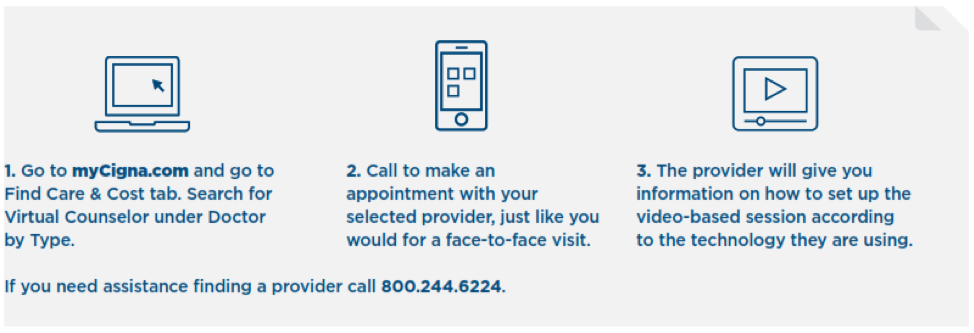

It’s great to talk with friends about your issues. And the Live and Work Well Employee Assistance Program benefit provided by HBC is an excellent place to get initial professional counseling and good mental health information. But sometimes, you need more help.
HBC Associates and their dependents who participate in one of HBC’s medical benefit plans have access to Cigna Behavioral Health’s comprehensive mental and behavioral services outlined in the article below, provided by Cigna:
CIGNA BEHAVIORAL
Move forward with your health and wellness
Studies show that behavioral problems, like depression, anxiety and chronic anger, can contribute to cardiac diseases.1 Many physical conditions can worsen with stress, substance use and other behavioral health issues.
If you or a loved one has been diagnosed with a behavioral health condition, it can be hard to know where to turn for help. Cigna Behavioral is here for you. Our comprehensive program provides dedicated support and educational tools. We help you take control of your health, mind and body.
Our whole-person approach
With Cigna Behavioral, you get a personalized customer experience. We support you wherever you are in your health care journey. Cigna Behavioral gives you access to:
Behavioral Specialty Care Support2
Our specialty programs give you access to behavioral experts with extensive experience. Our dedicated behavioral care managers help you and your family address the challenges of:
- Autism spectrum disorder
- Bipolar disorder
- Child and adolescent mood and anxiety disorders
- Eating disorders
- Substance use
- Young adult major depression, bipolar disorder and substance use
Our care managers give you confidential coaching and support. And they can help for as long as needed. (You must stay covered under one of HBC’s medical plans to continue service.)
Care managers can help you:
- Understand a behavioral diagnosis
- Learn about the treatment choices and your benefits plan
- Identify and manage triggers that affect your condition
- Coordinate your behavioral and health care benefits
- Find a health care professional or facility in Cigna’s network geared to your needs
- Find community resources and programs near you
- Advocate for yourself
- Find resources and tools on Cigna.com and Cignabehavioral.com
- Get referrals to other Cigna wellness and lifestyle programs available to you2
Take control – with extra support
Cigna Behavioral helps you take control of your health and wellness with the following programs and tools.
Behavioral Awareness Seminars. Cigna offers free monthly seminars on:
- Autism
- Eating disorders
- Substance use
- Behavioral health awareness for children and families
Here’s what our program participants tell us:
- 100% were very satisfied with the service their care manager provided.3
- 10 hours – Average time saved per participant by using programs. Compared to time they would have spent on their own getting information and arranging services.4
The seminars are taught by industry experts. They give tips, tools and information you’ll find helpful.
Enhanced online tools. A suite of tools that deliver on-demand support, including:
- Information about your benefits, in-network providers and treatment options
- Health and well-being articles
- Self-assessment and stress management tools
- A large library of content on many medical and behavioral health topics
Virtual Behavioral Health Care. Where and when you need it.
Access behavioral health outpatient care with a Cigna Behavioral Health network provider.5 Get help when, where and how it works best for you. Get quality care with video-based services, in a way that may be more convenient than visiting an office for the same cost as an office visit.
To make an appointment:
At Cigna, we’re always looking for ways to serve you better. These programs and materials can help you and your family get healthier.
To learn more or access services
Visit myCigna.com or call the toll-free number on your Cigna ID card. If there isn’t a number on your card, call Cigna Behavioral at 800-274-7603.
Go to myCigna.com for extra resources.
1. American Psychological Association, Mind/Body Health: Heart Disease, 2016.
2. Please check with your employer to confirm services included in your plan.
3. Cigna Satisfaction Survey, 2015.
4. Cigna Satisfaction Survey, 2014.
5. Telehealth services including video chat may not be available in all areas or with all plan types. See your plan materials for costs and complete details of coverage including other telehealth benefits that may be available to you.
All Cigna products and services are provided exclusively by or through operating subsidiaries of Cigna Corporation, including Cigna Health and Life Insurance Company, Connecticut General Life Insurance Company, Cigna Behavioral Health, Inc., and HMO or service company subsidiaries of Cigna Health Corporation. The Cigna name, logo, and other Cigna marks are owned by Cigna.